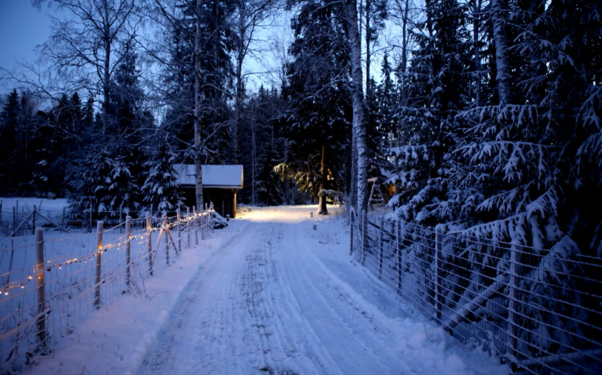

二十四节气·大雪
每年12月6日-8日
节气简介
大雪，为二十四节气之第二十一节气，冬季第三个节气。此时太阳到达黄经255°，“大雪”之名源于降雪量级——相较于小雪，此时气温更低、降雪概率增加、雪量更大，多地会出现积雪现象。大雪时节，天地冰封、万物蛰伏，冷空气活动达到冬季以来的较强水平，民间谚语“大雪封河，冬至封海”生动描绘了这一节气的严寒特征，标志着冬季进入最寒冷的阶段之一。
发展历程
大雪的节气文化根植于上古农耕文明，是古人顺应冬季闭藏规律的智慧结晶。秦汉时期，大雪已成为重要的农事与生活节点：北方地区因严寒封冻，农事活动基本停止，百姓转入“猫冬”休整，同时加固牲畜棚舍、储备足量饲草；南方则趁农闲修缮农具、腌制年肉，为春节做准备。古代朝廷会举行“迎冬”相关祭祀仪式，祈求来年风调雨顺。随着时代演变，“赏雪景”“煮腊酒”“腌咸货”“补冬”等习俗在各地传承，成为大雪文化的鲜明印记。

气象变化
大雪时节，亚洲冷高压进入强盛期，冷空气频繁南下并形成寒潮，我国大部气温持续走低，北方地区普遍降至-10℃以下，东北、西北等地甚至出现-20℃的严寒，降雪范围扩大、雪量增加，平原地区积雪可达数厘米至数十厘米，河流封冻；南方地区气温也降至0-10℃区间，多阴雨、雨夹雪或小雪天气，空气湿度大、湿冷感强烈。此时昼夜温差缩小，但整体严寒持续，大风、冰冻等灾害性天气增多，北方“千里冰封，万里雪飘”，南方“寒雨连江，雾气氤氲”，呈现南北各异的冬季景象。
物候现象
中国古代将大雪的十五天分为三候，精准捕捉了节气物候特征：“一候鹖鴠不鸣，二候虎始交，三候荔挺出”。一候鹖鴠不鸣，鹖鴠（寒号鸟）因天气严寒停止鸣叫；二候虎始交，此时阴气最盛，阳气已开始萌动，老虎顺应阴阳交感之理开始交配繁殖；三候荔挺出，“荔挺”为兰草的一种，虽处寒冬却能感受到阳气萌动而抽出新芽，体现了自然界“寒冬藏春”的生机与规律。